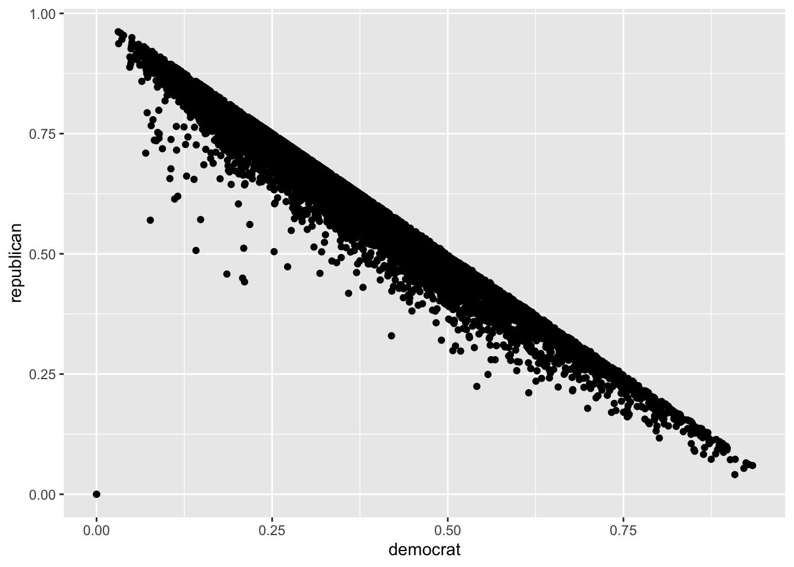
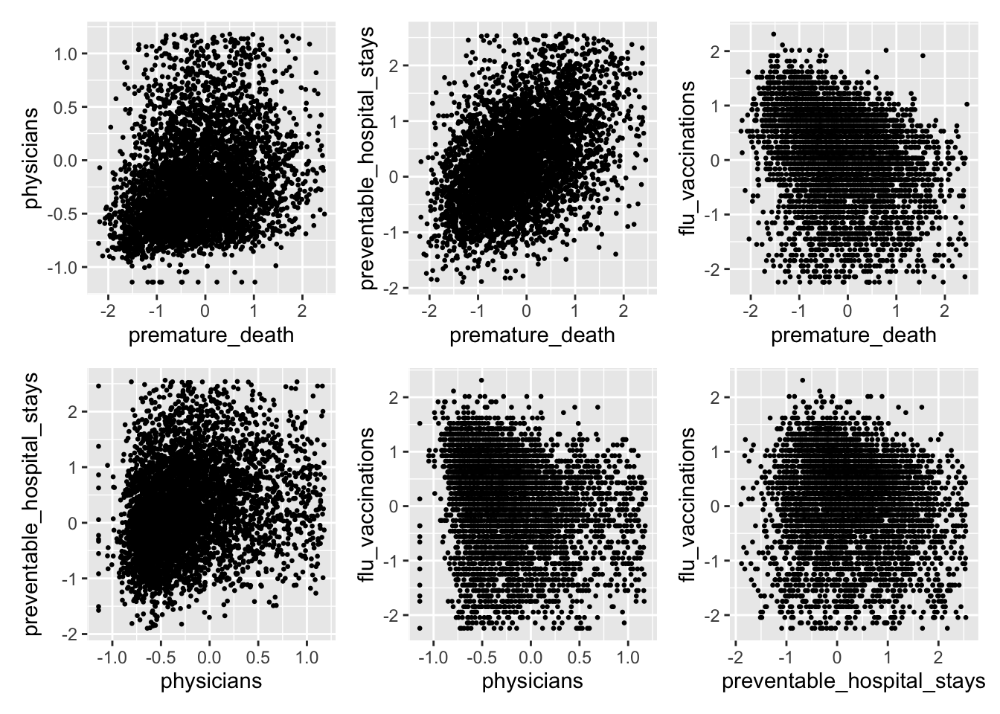
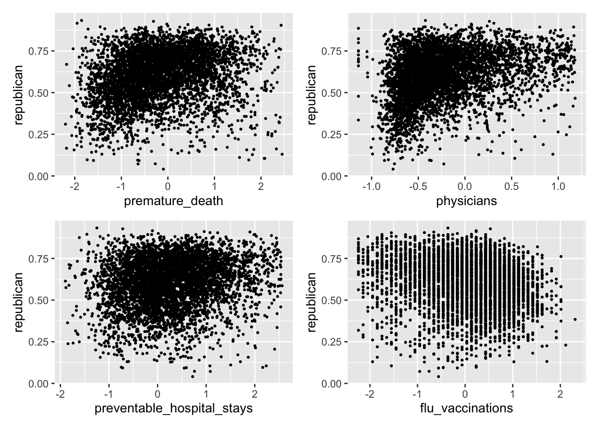
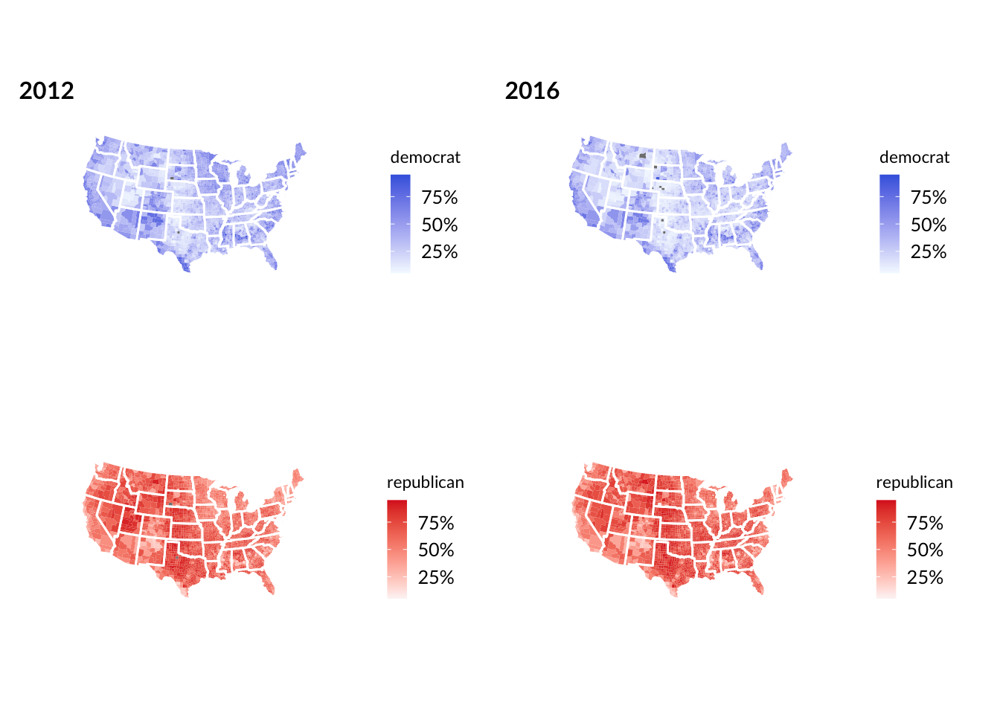
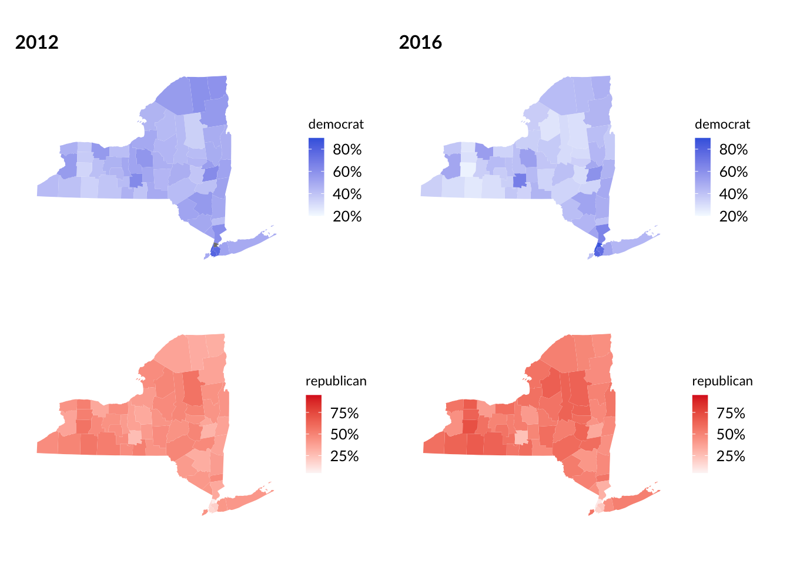

Connecting Political Views and Health Metrics
Riyadh Baksh (rhb2152), Anika Mitchell (am5088), Jeong Yun Yang (jy3306)
2024-12-07
Motivation
The goal of this project is emulate an ecological study in order to understand and visualize the relationship between political trends and outcomes on county-level public health in the United States. Specifically, we are interested in the potential correlations between a variety of health metrics and presidential election results in both 2012 and 2016. By understanding the relationship between these data, this project aims to understand sociopolitical and socioeconomic implications for health and wellbeing at a county level, and offer insights into patterns that may offer recommendations for broader application.
Initial Questions
Our main research question is: how do national and county level bipartisan voting patterns impact key health indicators (premature death, preventable hospital stays, number of physicians, and vaccination status) in 2012 and 2016. Our original research question was interested in assessing this relationship from 2000-2020, however we chose to constrain our data to using only 2012 and 2016 data after conducting early data wrangling and exploratory analyses that identified this set of time as having the most robust dataset available to appropriately assess our relationship of interest. Additionally, this date range (2012-2016) is of particular public health interest, as the decades long trend of increased life expectancy between 1959 and 2016 started to noticeably slow down after 2014 (Woolf and Schoomaker, 2019).
Data
For information on health outcomes by county and by year, we used information from this source: https://www.countyhealthrankings.org/health-data/methodology-and-sources/data-documentation
For data on election results by county and by year, we consulted the MIT election datasets: https://electionlab.mit.edu/data
We started by cleaning the election dataset, which
contains information such as county name, state, year, party, and total
votes. The mutate function was used to calculate the percentage of
votes. The common variable year_county was used to uniquely
match the data for a given year and county FIPS code.
We identified four measures that are the most robust in the datasets:
Premature death, Preventable hospital stays,
Primary care physicians, and Flu vaccinations,
and filtered for these four measurements. Since these measurements have
different units and scales, we standardize each variable to improve
visualization and statistical analysis. This means that for each health
metric, a value of zero means the average, and each unit represents one
standard deviation away. For example, a premature_death
value of 1 means that county has a premature death rate that is one
standard deviation higher than the average county.
Here we join the election and health
datasets by a common variable year_county. Through our
exploratory analysis, we found that years 2012 and 2016 had the least
amount of missing data, hence we filter for data for these years. Then
we remove the outliers for each measurements.
Exploratory Analysis
We first started by exploring each dataset individually. For the
election data, a plot was made comparing the county vote
share for democrat and for republican. It was
observed that in many counties, the sum of the democrat and
republican percents do not add to 1, which indicates the
presence of third-parties. That being said, the graph below shows
there’s a limit where no points are above the line \(y=x\). This makes sense because the vote
share in a specific county cannot exceed 100%.

Next, we considered how the four health variables under investigation
are related to each other. This was important to make sure they are all
independent from each other. In general, there is largely random
distribution of points, so there is no clear pattern. However, the
relationship between premature_death and
preventable_hospital_stays does suggest a positive
correlation. Counties with higher premature death rates also seem to
have more preventable hospital stays, which makes sense because a
premature death means by definition that it was a preventable death.
There also seems to be a negative correlation between
premature_death and flu_vaccinations. With
greater flu vaccinations, we observe fewer premature deaths.

Now, we began to look at the correlation between election results and
these four health metrics. For simplicity, the outcome or response
variable was chosen to be the republican vote share.
However, as we demonstrated above, this is negatively correlated with
the democrat vote share.
There does seem to be a lot of random scatter and a clear pattern is
hard to justify. However, some interesting observations are the positive
correlations between physicians and republican
vote share. There also seems to be a negative correlation between
flu_vaccinations and republican vote
share.

Geographic Plots
We also decided to include maps as part of the exploratory analysis.
The plots below show the nationwide county-level vote share. The darker
blue represents higher democrat vote share. The darker red
represents higher republican vote share. As expected, these
are inversely related - that is, a darker blue area would also be
lighter red. To improve comparability, the scales are fixed so that the
same shade of blue, for example, means the same thing between the two
years. We noticed that when going from 2012 to 2016, the map became a
lot lighter blue, reflecting the decrease in the democrat popular vote
from 2012 to 2016. Note: Alaska was removed due to a different way of
assigning counties, and thus Hawaii was also removed so that we only
considered the contiguous US.

While the intention was to look at nationwide correlations, we realized that there are many factors that influence voting across an entire country. It is also more difficult to identify trends in large heterogeneous populations. Therefore, we decided to also zoom in on New York state. We also observed that from 2012 to 2016, the state became lighter blue and darker red.

Next, we considered the geographic distributions of the health metrics. It would be difficult to see trends across the entire US, so instead, we are only looking at New York state.
There does not seem to be a clear pattern for
premature_death, as some counties became lighter whereas
others became darker.

The physicians rate in each county appears to stay
roughly constant when going from 2012 to 2016.

At first glance, it seems that there were fewer
preventable_hospital_stays in 2016 compared to 2012.

Further, flu_vaccinations seems to have stayed roughly
constant from 2012 to 2016.

Additional Analysis
Next, we conducted a series of multiple linear regressions to
quantify the effect of the health metrics on the republican
vote share. There were a total of six regressions: the US for both
years, the US for 2012, the US for 2016, NY state for both years, NY
state for 2012, and NY state for 2016. The estimates for the
coefficients and the corresponding R2 values are summarized in the
tables below. Note that while not all estimates were significant, most
were at the 5% level. These numbers will be further discussed in the
next section.
| term | US_Overall | US_2012 | US_2016 | NY_Overall | NY_2012 | NY_2016 |
|---|---|---|---|---|---|---|
| (Intercept) | 0.624 | 0.600 | 0.641 | 0.520 | 0.431 | 0.548 |
| premature_death | 0.025 | 0.016 | 0.023 | 0.113 | 0.051 | 0.109 |
| physicians | 0.078 | 0.062 | 0.089 | 0.079 | 0.067 | 0.106 |
| preventable_hospital_stays | 0.005 | 0.008 | 0.016 | -0.027 | -0.009 | 0.009 |
| flu_vaccinations | -0.016 | -0.010 | -0.024 | 0.088 | 0.078 | 0.102 |
| US_Overall | US_2012 | US_2016 | NY_Overall | NY_2012 | NY_2016 |
|---|---|---|---|---|---|
| 0.125 | 0.076 | 0.179 | 0.387 | 0.313 | 0.439 |
Discussion
National Trends from Election Results
From our preliminary analysis of the 2012–2016 election data, we observed several key trends in the political landscape across U.S. counties:
Republican Dominance: More counties have the Republican Party as the majority party compared to those with a Democratic majority. Republican-leaning counties dominate the U.S. geography, particularly in the Midwest and South. This trend is consistent with historical voting patterns, where these regions have traditionally favored the Republican Party.
Strong Republican Support: In addition to a larger number of Republican-majority counties, there is a higher concentration of counties with strong Republican support compared to Democratic counties, which tend to be more evenly split or less firmly aligned with the Democratic Party.
Shift Toward Republicanism: Comparing the 2012 and 2016 data, we observed that the proportion of Democratic-leaning counties decreased. This suggests a general shift towards the Republican Party across more counties over the four-year period.
There are regional factors that may explain these trends. The Midwest and South have long been strongholds for the Republican Party. Changes in economic conditions, cultural shifts, or issues like immigration and healthcare may have further entrenched this political divide. Areas that experienced economic hardship, such as the decline of manufacturing in certain regions, might have shifted politically towards the Republican Party due to its promises of job creation and protectionism. Furthermore, there could be a broader realignment of voters based on issues like race, education, and income, which have become more pronounced in recent elections. These trends align with findings from other studies that suggest a growing rural-urban divide, where rural areas have increasingly supported Republicans, while urban areas have leaned Democratic.
Health Metrics and Election Results
We examined several key health metrics at the county level to explore whether they correlate with political views. The health metrics analyzed include the number of physicians, premature death rates, preventable hospital stays, and flu vaccination rates. Initial analysis revealed no definitive relationship between the health metrics (physicians, premature death, preventable hospital stays, and flu vaccinations) and the political outcomes across all counties. This suggests that these health metrics alone do not directly predict political behavior at the county level. A plot comparing premature death and preventable hospital stays showed a positive relationship, meaning that counties with higher rates of premature death also tended to have higher rates of preventable hospital stays. This could indicate that areas with poor health outcomes face systemic issues related to healthcare access or quality.
When examining health metrics by political party, we found that counties with more physicians tended to lean Republican. This may seem counterintuitive at first, but it could be explained by the fact that counties with more physicians might also have wealthier populations, which tend to lean Republican. Similarly, counties with higher rates of premature death also tended to have a stronger Republican vote share. This might be linked to regions facing economic hardship or healthcare challenges, which may vote Republican in search of policies to address these issues.
Regression Analysis
To better understand the relationships between health metrics and political preferences, we conducted a regression analysis using covariates such as premature death, number of physicians, preventable hospital stays, and flu vaccinations to predict the percentage of Republican votes in each county.
Premature Death: For every 1 standard deviation increase in premature deaths, the Republican vote share increased by 0.025% (p < 0.005). Counties with higher premature death rates might face higher levels of economic distress, which could drive voters to support the Republican Party in hopes of economic recovery and healthcare reforms.
Number of Physicians: For every 1 standard deviation increase in the number of physicians, the Republican vote share increased by 0.078% (p < 0.005). Wealthier, more urban counties with better healthcare access (i.e., more physicians) may lean Republican due to broader political and socioeconomic factors in these areas.
Flu Vaccinations: Interestingly, for every 1 standard deviation increase in flu vaccinations, the Republican vote share decreased by 0.016% (p < 0.005). The negative correlation between flu vaccinations and Republican vote share may reflect demographic differences, where counties with higher vaccination rates could be more urban and liberal-leaning, or it could reflect regional differences in attitudes towards healthcare policies.
To assess the overall strength of the correlation, we calculated the regression coefficients for the percentage of Republican votes in counties. The overall U.S. dataset had an R-squared value of 0.125, indicating significant variation in the data. This suggests that while health metrics have some impact, they do not fully explain the variation in voting behavior. When we stratified the data by election years (2012 and 2016), we found that the variations remained large, suggesting that the relationship between health metrics and political views is not constant over time. Focusing specifically on New York counties, we observed a higher R-squared value of 0.387. This indicates that there is less variation in the data for New York counties compared to the overall U.S. dataset. This was expected, as New York has a more homogenous population with fewer extreme rural-urban divides than the national data, leading to a stronger correlation between health outcomes and voting behavior.
Political trends in New York from 2012 to 2016
Our analysis of political trends in New York from 2012 to 2016 revealed several key patterns:
We found that more counties in New York had a Republican majority compared to those with a Democratic majority. The majority of the state’s geography leans Republican, particularly in suburban and rural areas, while urban centers, especially New York City, remain solidly Democratic.
There are more counties with strong Republican support compared to Democratic counties, which tend to show more moderate or less strongly-aligned voting patterns. This suggests a geographical divide between strongly Republican and less strongly Democratic areas in New York.
From 2012 to 2016, many counties in New York became more Republican-leaning. However, the New York City metropolitan area remained a stronghold for the Democratic Party, showing no significant change in its political alignment.
The trend of Republican-leaning counties outside New York City and the strong Democratic support within the city can be attributed to the urban-rural divide. Urban areas, like New York City, tend to vote Democratic due to factors like higher diversity, younger populations, and progressive policies. In contrast, rural areas have more conservative views and lean toward the Republican Party, driven by different economic priorities and social values.
Rural counties in New York, facing economic challenges such as the decline of manufacturing and agricultural sectors, may be shifting toward the Republican Party, which has focused on policies that promise economic revival. New York City, however, remains more Democratic due to its larger, more diverse population with a greater emphasis on social services and progressive economic policies. The shift in New York’s counties toward the Republican Party mirrors broader national trends where rural areas have moved rightward while urban areas have become more liberal. Similar patterns are seen in other studies, such as the growing rural-urban divide that has been a defining feature of recent U.S. elections.
Health Metrics in New York (2012–2016)
Our analysis of health metrics in New York from 2012 to 2016 revealed some interesting patterns across counties:
More counties in New York showed higher rates of premature deaths and a higher number of physicians. These trends indicate that certain regions of the state may be facing healthcare challenges or have greater access to healthcare providers.
In contrast, we found that some counties had lower rates of preventable hospital stays and flu vaccinations. This suggests that while some counties may have a greater concentration of healthcare professionals, they might still face barriers to accessing preventative care, including vaccinations and avoidable hospitalizations
Certain counties in upstate New York, particularly in rural areas, have higher rates of premature deaths, which could be linked to factors such as poor access to healthcare, economic hardship, and lifestyle factors like smoking and diet. Counties with higher availability tend to be wealthier or urbanized, such as in parts of Long Island and the Hudson Valley. These areas may have more healthcare infrastructure, but they also tend to vote Republican, suggesting a complex relationship between healthcare access and political preferences. We observed that some counties with high physician availability still had low rates of preventable hospital stays, which may indicate good primary care access or effective health interventions. Conversely, some counties had low flu vaccination rates, possibly due to less health outreach or resistance to vaccinations, which could vary depending on local attitudes or healthcare policies. Rural areas or regions with less health education may have lower vaccination rates, which can increase the risk of preventable illnesses.